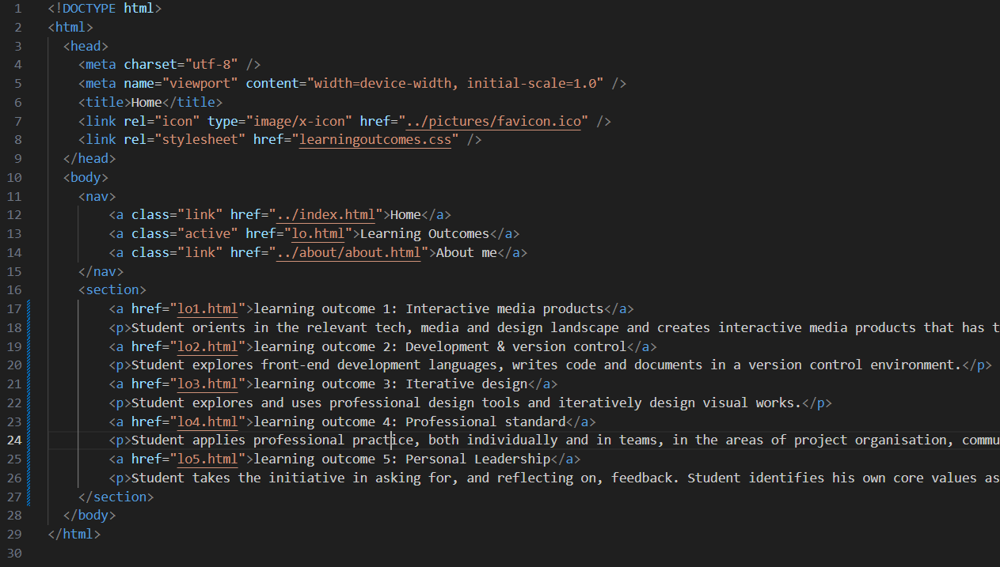
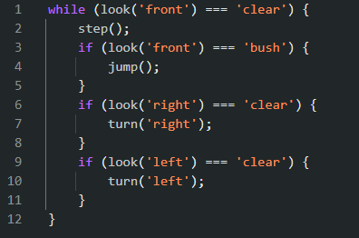
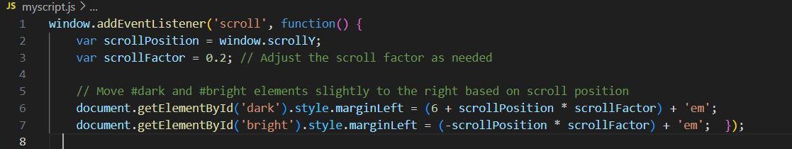

Learning Outcome 2: Development & Version Control
In exploring front-end development languages, I've delved into writing code and documenting within a version control environment. For my portfolio, I utilized HTML, CSS, and JavaScript to bring my vision to life. At the beginning of the semester, I learned the importance of writing HTML semantically. Implementing this practice into my portfolio initially presented challenges, but through perseverance and practice, I've made significant improvements. While there's still room for enhancement, the overall structure now adheres more closely to semantic principles, enhancing accessibility and maintainability.
Another aspect of my development journey involves delving into classes and subclasses in CSS. This area feels relatively unexplored for me, and I've been actively seeking opportunities to learn and apply these concepts beyond simple examples. By immersing myself in projects and experimenting with different techniques, I aim to deepen my understanding and proficiency in CSS. Recently, I embarked on learning JavaScript during development lessons. While it's still early days in my JavaScript journey, I'm pleased with the progress made so far. In a recent exercise involving an "allcancode" game, I successfully wrote JavaScript code that navigated through all the levels, showcasing a promising start to my JavaScript endeavors. As I continue to advance in my development skills, I'm committed to ongoing learning and improvement. Whether it's refining HTML semantics, mastering CSS classes, or expanding my JavaScript knowledge, I embrace the challenges and opportunities for growth that lie ahead.
The "allcancode" game is a coding exercise or challenge often used in educational settings to teach programming concepts. In this game, participants are tasked with writing code to solve a series of progressively more difficult challenges or levels. The challenges typically require participants to demonstrate their understanding of fundamental programming principles such as variables, loops, conditionals, functions, and problem-solving skills.
Regarding the "allcancode" game, I've saved the JavaScript code as a snippet, allowing me to access and utilize it whenever necessary. This practice not only ensures that the code remains organized and easily retrievable but also facilitates its reuse in future projects or similar exercises. By maintaining a repository of snippets for various functionalities or algorithms, I can streamline my development process and expedite the implementation of common tasks. This approach promotes efficiency and consistency in coding practices, ultimately enhancing my productivity as a developer. Having the "allcancode" snippet readily available empowers me to build upon it, refine it, or adapt it for different contexts as needed. It serves as a valuable resource in my coding arsenal, contributing to a more seamless and effective development workflow.
Several weeks ago, I began utilizing GitHub as my chosen platform for version control, storing my code repositories. Initially, I had intended to use GitLab for this purpose, but encountered an unexpected obstacle preventing me from adding new projects on that platform. GitHub, renowned for its user-friendly interface and robust features, seamlessly integrated into my workflow. Transitioning to GitHub allowed me to efficiently manage my projects, collaborate with others, and track changes using Git version control.
My Git repositoryIndeed, adding the animation of my photo appearing on the index page was a task I sought guidance on from ChatGPT. Through our conversation, it became clear that achieving this effect required just two simple lines of JavaScript code.
